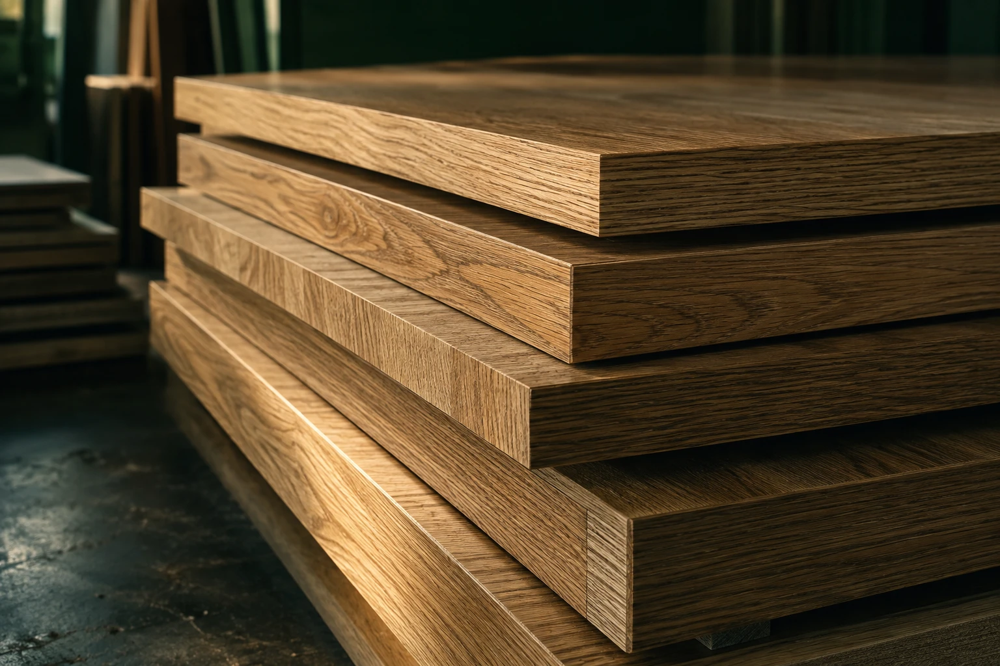

01 / С помощью менеджера
Отдать менеджеру
на обработку
Загрузите исходный Excel и добавьте пожелания. Менеджер проверит файл, уточнит материалы и подготовит заказ к расчёту.
Отдать менеджеру на обработку
К содержимомуМартин Форест / Мебельные детали
Для ваших проектов. По вашим размерам.
Всё начинается с деталей
Для кухни, шкафа, гардеробной или отдельной полки — подготовим детали по вашему проекту.
Вы задаёте размеры и выбираете материал. Мы проверяем деталировку, согласовываем кромку и направление текстуры, рассчитываем заказ и выполняем работу.
О Martin ForestЧто мы делаем
Две основные операции, от которых зависит аккуратность будущей мебели.
Подготовим мебельные детали по вашему списку. Учтём материал, количество и направление текстуры.
02Облицуем торцы по согласованной схеме. Декор, толщина кромки и каждая сторона — под ваш проект.
Подготовка заказа
Готовую деталировку можно передать менеджеру или самостоятельно подготовить на сайте.
01 / С помощью менеджера
Загрузите исходный Excel и добавьте пожелания. Менеджер проверит файл, уточнит материалы и подготовит заказ к расчёту.
Отдать менеджеру на обработку02 / Самостоятельно
Импортируйте Excel или внесите детали вручную. Выберите материалы, проверьте размеры и стороны кромки — затем отправьте заказ на проверку.
Подготовить самостоятельноМатериалы и кромка
Декор, структура и торец работают вместе. Подберём кромку к выбранному материалу и проверим каждое назначение перед запуском заказа.
Работаем и с материалом клиента. Формат листа, толщину и условия обработки согласуем при подготовке заказа.
Подготовить деталировкуКак мы работаем
Предварительный расчёт уточняем после раскроя и проверки. В работу идёт согласованный заказ.
Excel менеджеру или самостоятельная деталировка.
Уточняем материалы, кромку и производственные данные.
Фиксируем состав заказа и итоговую стоимость.
Выполняем согласованный заказ.
Сообщаем о готовности и согласуем получение.
Ещё один способ начать
В 3D-конструкторе комода можно изменить размеры, выбрать компоновку и материалы, затем перенести предварительный список деталей в заказ.
О 3D-конструкторе3D / Комод
На связи — Martin Forest